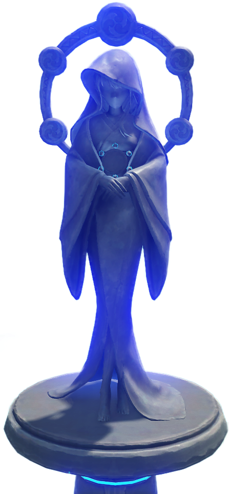
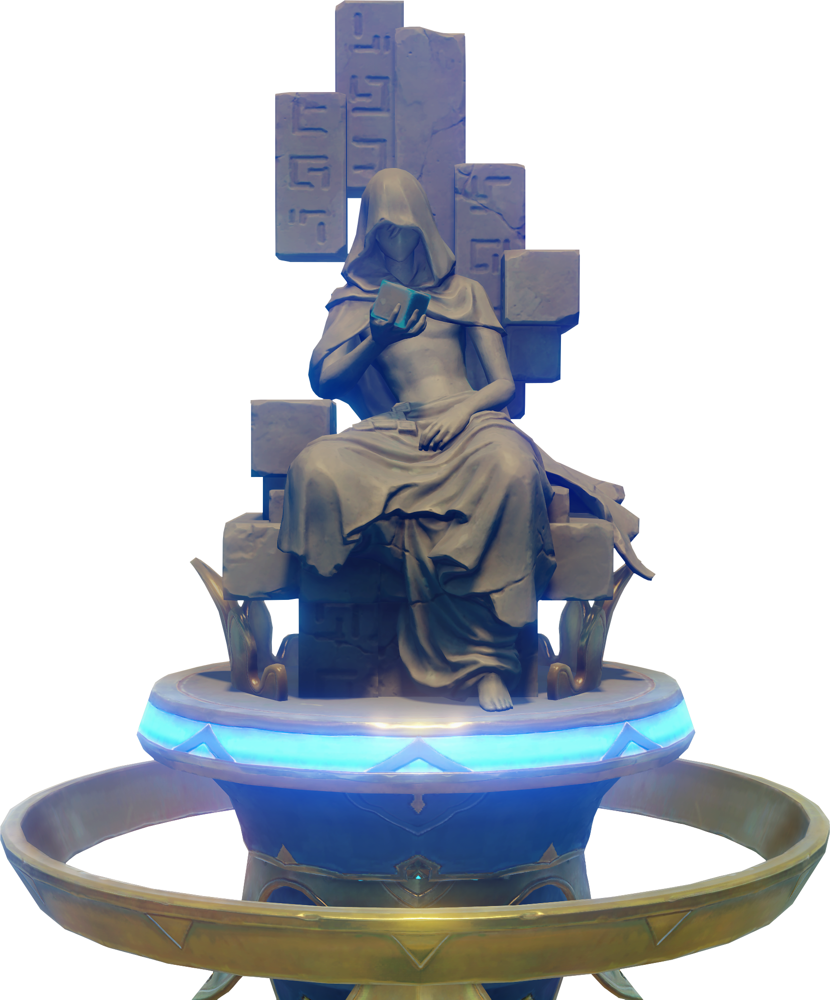
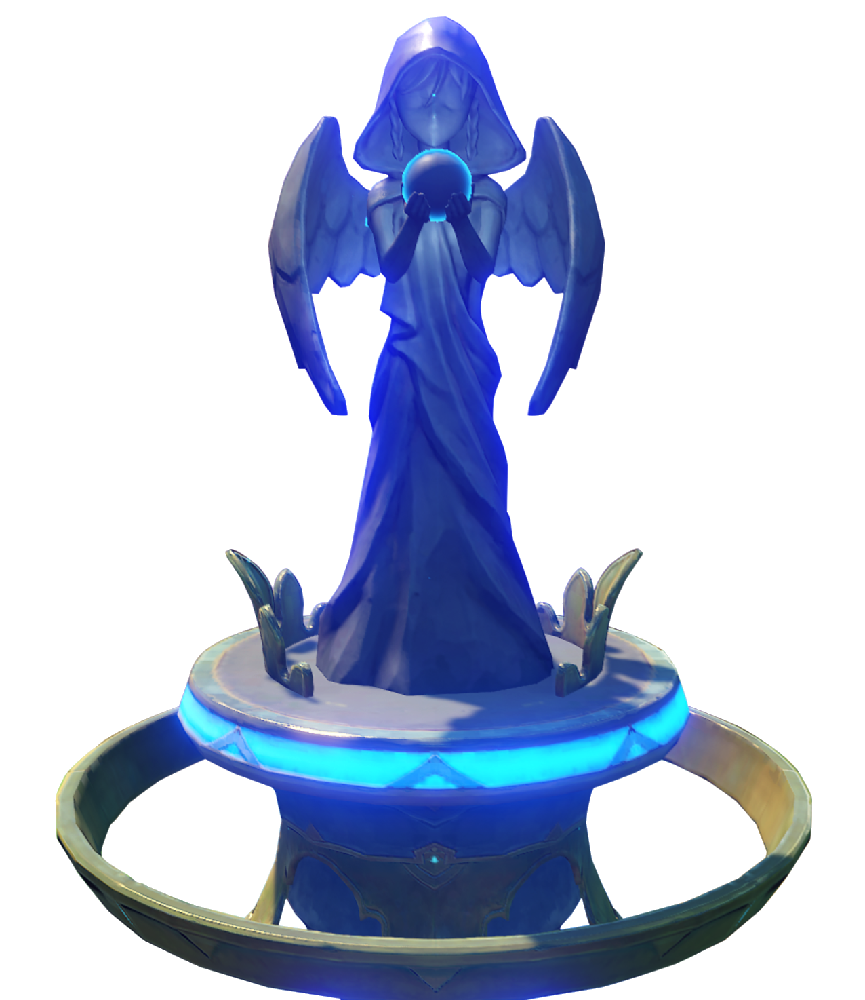
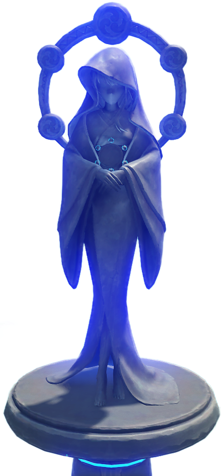
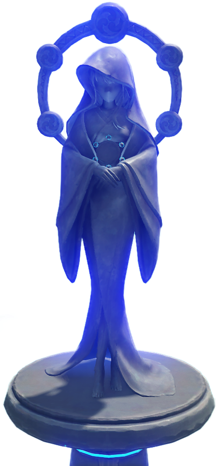
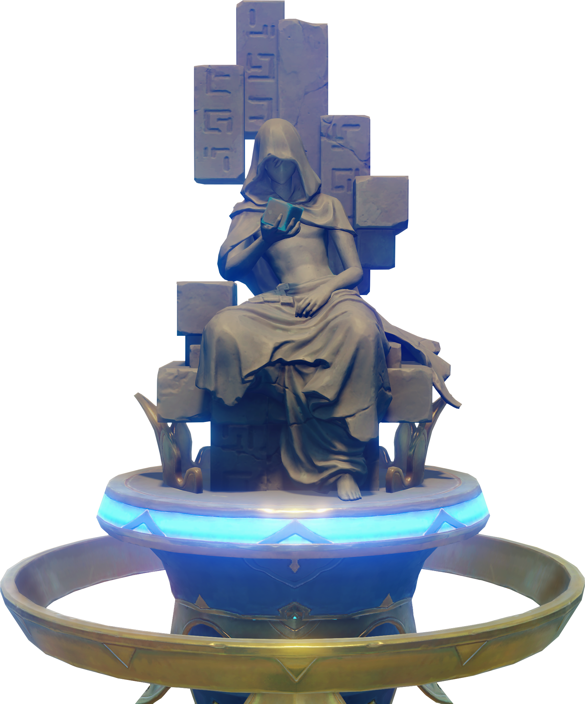
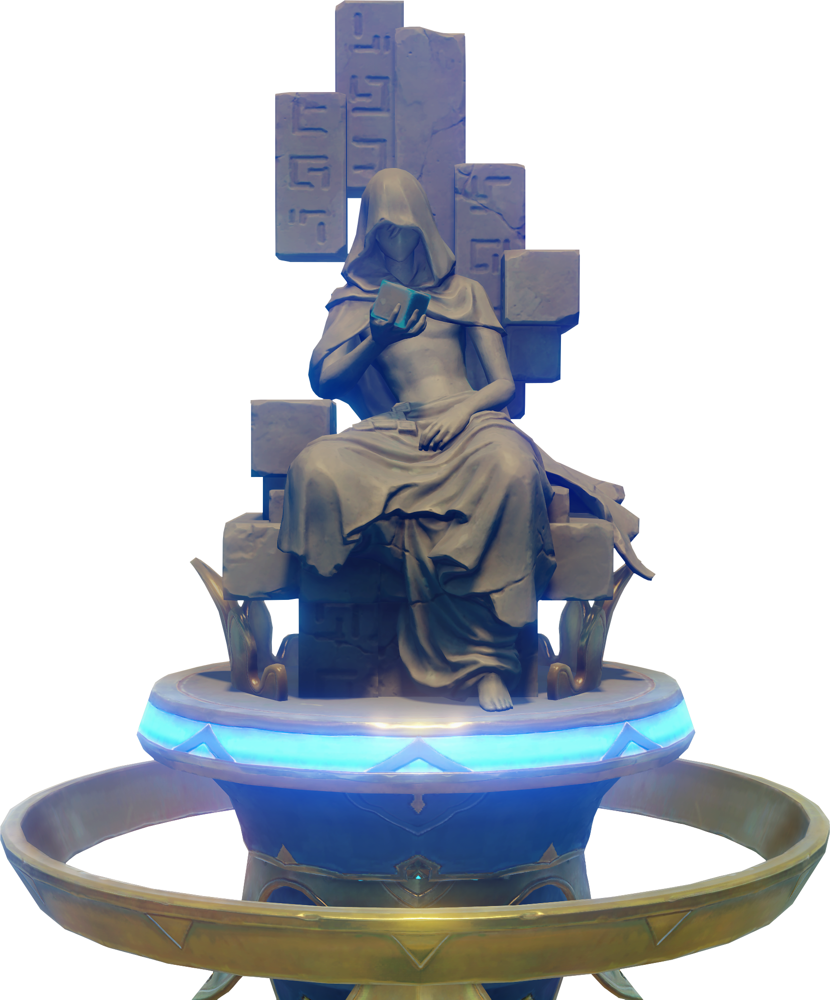
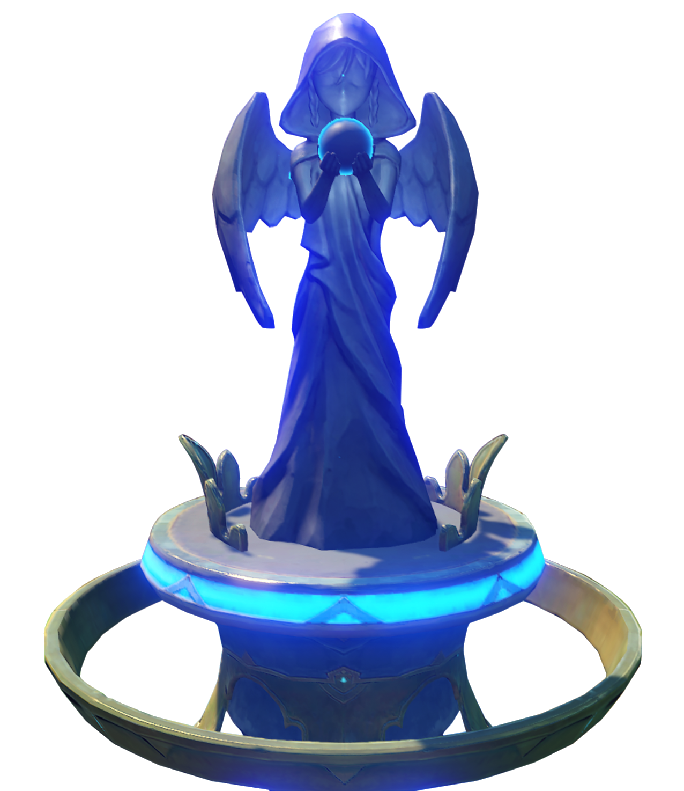
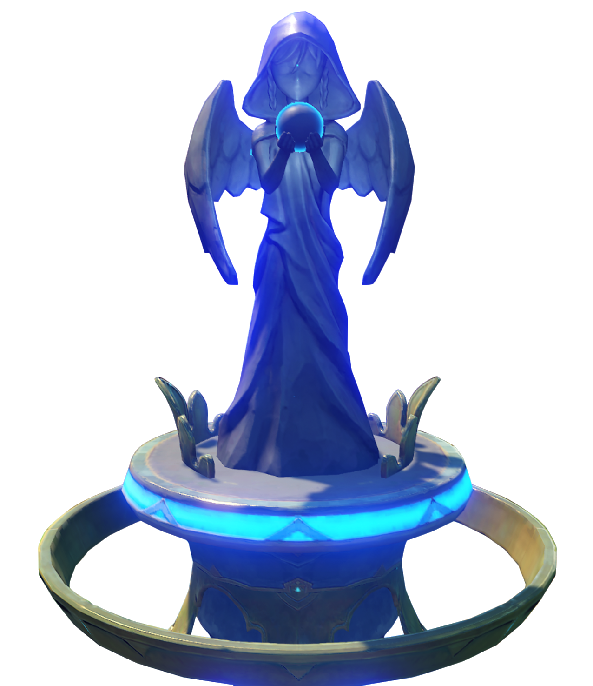

The Legend of Zelda: Breath of the Wild is held in high regard by the development team,
and is cited as one of the main inspirations for Genshin Impact.
Development was aimed at making the game different and fun in terms of its quest and
combat systems as well as its random events and mode of exploration.
1. Shogun (Japanese: 雷電将軍 Raiden Shougun), real name Raiden Ei (Japanese: 雷電影 Raiden Ei), is a playable Electro character in Genshin Impact.
She controls a puppet while meditating inside the Plane of Euthymia. Her current form is the vessel of Beelzebul, the current Electro Archon of Inazuma.

2. Zhongli (Chinese: 钟离 Zhōnglí) is a playable Geo character in Genshin Impact.
He first appears in the Archon Quests Chapter I: Act II - Farewell, the Archaic Lord. He is later revealed to be the current vessel of the Geo Archon, Morax, who has decided to experience the world from the perspective of a mortal. After giving up his Gnosis, he retires from his position as an Archon and returns to his former identity as an Adeptus, although still under the guise of being a human. He currently works as a consultant of the Wangsheng Funeral Parlor.

3. Venti is a playable Anemo character in Genshin Impact.
He is a free-spirited, wine-loving bard in Mondstadt and the current mortal vessel of Barbatos, the Anemo Archon. He first appears during the Archon Quest Prologue: Act I - The Outlander Who Caught the Wind.

- This Chinese video game development and animation studio based in Shanghai, China. Founded in 2012 by three students from Shanghai Jiao Tong University, miHoYo currently employs 2400 people.
Game Link
 

 

 
